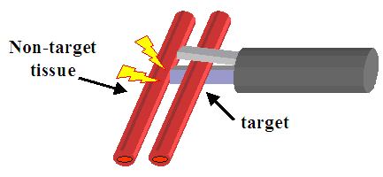
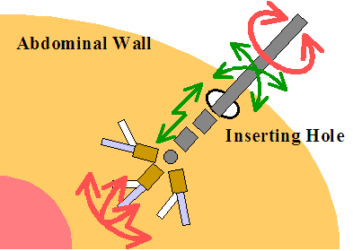
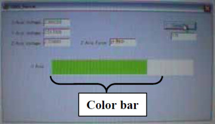

多自由度超音波凝固切開装置の屈曲・把持機構の開発
はじめに
超音波凝固切開装置(UAS) は凝固と切開を同時に行える手術器具であり，腹腔鏡下手術において止血を迅速に行えるため広く用いられている。しかし，現在市販されているUASは直線形状のため，トロッカーに拘束され処置部へのアプローチも直線状に限定されてしまい，手術手技に大きな制限をもたらしている。このUASの問題点について，我々は屈曲マニピュレータの先端に小型超音波振動子を搭載することで屈曲可能なUASとする方法を提案し，屈曲1自由度を有する試作機(以下1次試作機)を製作しその有効性を確認した。その際，問題点として自由度が不足しブレードが組織に予期せぬ損傷を与える可能性が依然残る点(Fig.1)，屈曲先端が大型であり腹腔内で自由な操作が困難である点，組織を把持する時の感覚が得にくい点が指摘された。
これらの問題を克服するために，自由度を追加し，屈曲先端を小型化し，さらにワイヤ張力センサを導入し術者に把持力を提示可能な試作機(以下2次試作機)を製作したので報告する。
|  |
| Fig.1 Pitfall of UAS: Vibration blade touches and injures untargeted tissue |
多自由度UAS2次試作機
製作した2次試作機をFig.2に示す。小型超音波振動子を搭載する先端部に屈曲2自由度を配し，さらに鉗子軸根元部に回転自由度を配した。これにより先端振動子の6自由度の位置決め(Fig.3)が可能となり，ブレードが常に術者に見えている状態で作業を行うことが可能である。屈曲部操作は，屈曲関節それぞれに対応する手元部のダイアルの回転，鉗子軸回転は鉗子軸自体の回転，把持部操作は手元部のハンドルの握り込みにより，いずれも手動で行う。
屈曲機構の駆動にはワイヤ拮抗配置ならびに転がり摩擦を利用した関節構造を用いた。屈曲関節一つ当たり長さは12[mm]と小型ながら±90[deg]の屈曲範囲を実現した。さらにワイヤ経路中に送りねじを利用したワイヤ張力調節機構3)を導入した。これにより，屈曲動作のヒステリシスが小さく直感的に操作し易い動作特性を示すことが期待される。
屈曲関節より先端に配置される把持機構について，1次試作機のリニアスライダ機構に代え，ブレード閉動作をワイヤ引張，開動作を押しバネの復元による機構とした。この変更により，屈曲関節より先端部を1次試作機の82[mm]から67[mm]に短縮した。これにより，腹腔内での作業性の向上が期待できる。
術者に把持感覚として組織の把持力を提示するために，ワイヤ経路に張力センサとして力覚センサ(PD3-32-05-15, ニッタ株式会社)を導入した。ワイヤ張力を術者に提示するインタフェイスをFig.4に示す。センサで取得した把持力に対しカラーバーの長さ，色を変化させ画面上に提示する。このインタフェイスにより，見る者に把持力を直感的に提示できることを確認した。
|  |
| Fig.3 Positioning ability of 2nd prototype |
|  |
| Fig.4 GUI for displaying grasping force |
結論
多自由度UAS1次試作機の問題点を克服する2次試作機を製作した。今後，機構特性の評価ならびに腹腔鏡下手術を模した環境での使い勝手の評価を行う。
Related Papers:
| 1 |
小倉玄, 中村亮一, 蓮尾健, 佐久間一郎, 伊関洋: 小型振動子を用いた多自由度超音波凝固切開装置の開発（第３報）凝固・切開性能の評価, 第14回日本コンピュータ外科学会大会／第15回コンピュータ支援画像診断学会大会合同論文集, pp.183-184, 2005. |
| 2 |
蓮尾健, 小倉玄, 佐久間一郎, 小林英津子, 伊関洋, 中村亮一: 多自由度超音波凝固切開装置の屈曲・把持機構の開発, 第14回日本コンピュータ外科学会大会／第15回コンピュータ支援画像診断学会大会合同論文集, pp.43-44, 2005. |
| 3 |
蓮尾健, 小倉玄, 佐久間一郎, 小林英津子, 伊関洋，中村亮一: 多自由度超音波凝固切開装置の屈曲・把持機構の開発，日本コンピュータ外科学会会誌, J.JSCAS, Vol.7 No.3, pp.313-314, 2005. |
| 4 |
Hasuo Takeshi, Ogura Gen, Sakuma Ichiro, Kobayashi Etsuko, Iseki Hiroshi, Nakamura Ryoichi: Development of bending and grasping manipulator for multi degrees of freedom ultrasonically activated scalpel, International Journal of Computer Assisted Radiology and Surgery Vol.1 Supplement 1, pp.222-223, 2006. |
| 5 |
蓮尾健, 小倉玄, 小林英津子, 伊関洋, 中村亮一, 佐久間一郎: 多自由度超音波凝固切開装置の屈曲・把持機構の開発（第２報）多自由度試作機の開発, 第15回日本コンピュータ外科学会大会／第16回コンピュータ支援画像診断学会大会合同論文集, pp.95-96, 2006. |
|